何论文PDF第27页 ｜ 我们V8-R6 PDF第55页
方法不同何本页：第3章引入混塔整机8自由度多体动力学模型。
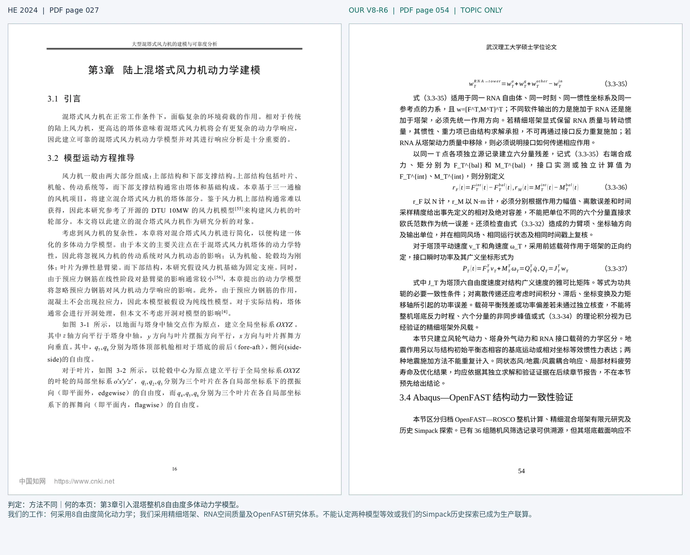
对应小节：3.4 Abaqus—OpenFAST结构动力一致性验证（原PDF第54页起）
差异与验收边界：何采用8自由度简化动力学；我们采用精细塔架、RNA空间质量及OpenFAST研究体系。不能认定两种模型等效或我们的Simpack历史探索已成为生产联算。
何论文原PDF第27—38页，共12页。每页与我们的139页版本按真实研究主题对应，非机械同页对照。
验收范围：这里只核验原页来源、页码及主题差异，不等于8自由度简化模型、精细塔架模型或联算物理结果全部通过。
何文第三章是8-DOF动力学建模；我们已有的历史Simpack结构探索不可冒充已完成的气动—精细结构实时联算。正式同态风载、完整接口平衡及局部材料疲劳仍需原始计算证据。
何本页：第3章引入混塔整机8自由度多体动力学模型。

对应小节：3.4 Abaqus—OpenFAST结构动力一致性验证（原PDF第54页起）
差异与验收边界：何采用8自由度简化动力学；我们采用精细塔架、RNA空间质量及OpenFAST研究体系。不能认定两种模型等效或我们的Simpack历史探索已成为生产联算。
何本页：转子转动、叶片方位角及整机示意。
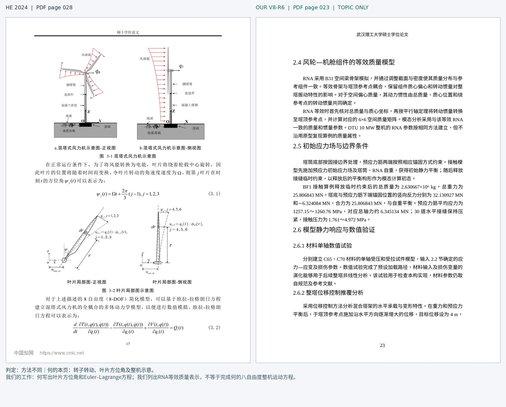
对应小节：2.4 风轮—机舱组件的等效质量模型（原PDF第23页起）
差异与验收边界：何写出叶片方位角和Euler–Lagrange方程；我们列出RNA等效质量表示，不等于完成何的八自由度整机运动方程。
何本页：用Euler–Lagrange方程建立8DOF广义坐标与系统动能。
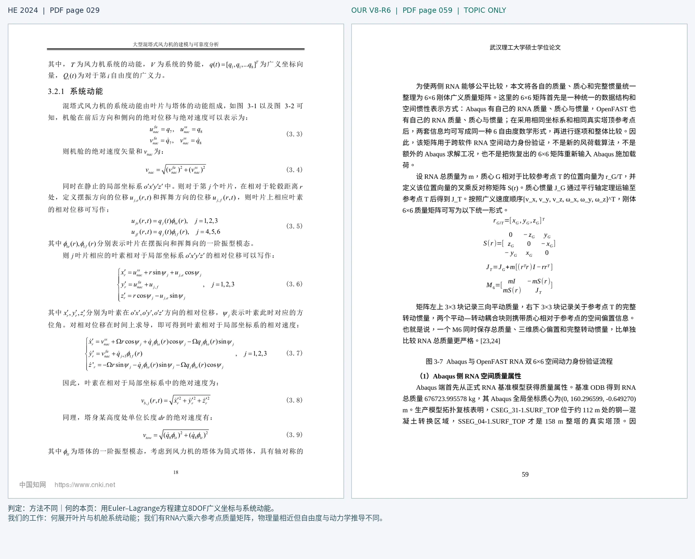
对应小节：设RNA总质量为（原PDF第59页起）
差异与验收边界：何展开叶片与机舱系统动能；我们有RNA六乘六参考点质量矩阵，物理量相近但自由度与动力学推导不同。
何本页：推导叶片/塔架动能、振型与耦合项。
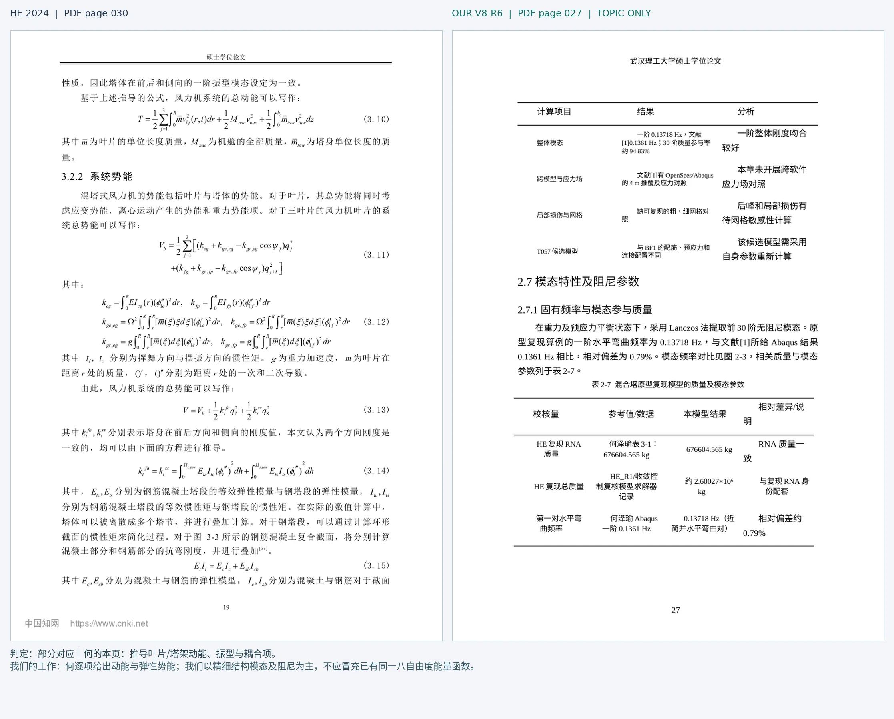
对应小节：2.7 模态特性及阻尼参数（原PDF第27页起）
差异与验收边界：何逐项给出动能与弹性势能；我们以精细结构模态及阻尼为主，不应冒充已有同一八自由度能量函数。
何本页：建立钢筋混凝土截面势能及运动方程M、C、K。
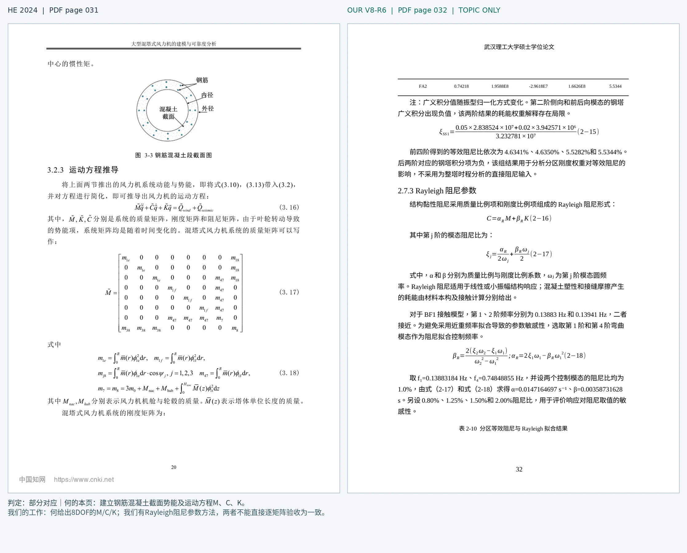
对应小节：2.7.3 Rayleigh阻尼参数（原PDF第32页起）
差异与验收边界：何给出8DOF的M/C/K；我们有Rayleigh阻尼参数方法，两者不能直接逐矩阵验收为一致。
何本页：展示8DOF系统质量/刚度矩阵及系数构造。
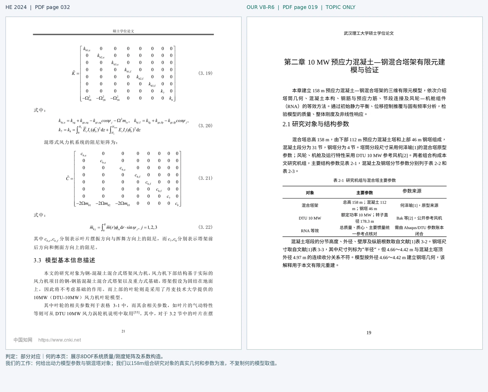
对应小节：2.1 研究对象与结构参数（原PDF第19页起）
差异与验收边界：何给出动力模型参数与钢混塔对象；我们以158m组合研究对象的真实几何和参数为准，不复制何的模型取值。
何本页：给叶片低阶振型拟合、DTU 10MW参数与158m混塔来源。
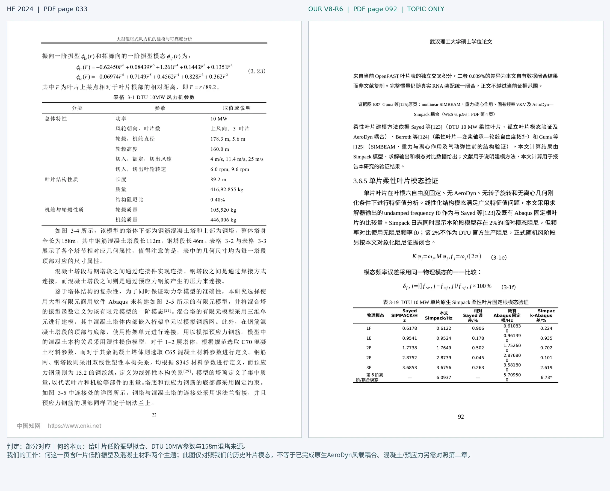
对应小节：3.6.5 单片柔性叶片模态验证（原PDF第92页起）
差异与验收边界：何这一页含叶片低阶振型及混凝土材料两个主题；此图仅对照我们的历史叶片模态，不等于已完成原生AeroDyn风载耦合。混凝土/预应力另需对照第二章。
何本页：表3-2列31节混凝土塔高、直径、壁厚及双排纵筋数量。
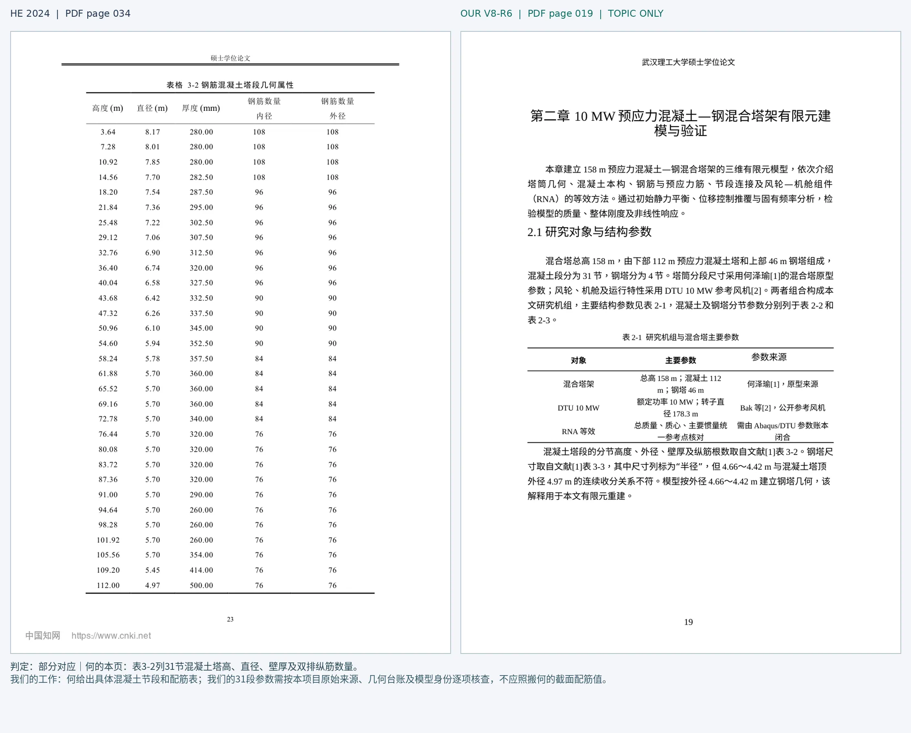
对应小节：2.1 研究对象与结构参数（原PDF第19页起）
差异与验收边界：何给出具体混凝土节段和配筋表；我们的31段参数需按本项目原始来源、几何台账及模型身份逐项核查，不应照搬何的截面配筋值。
何本页：表3-3列4节钢塔几何、连接与Abaqus示意，表头“半径”存在内部歧义。
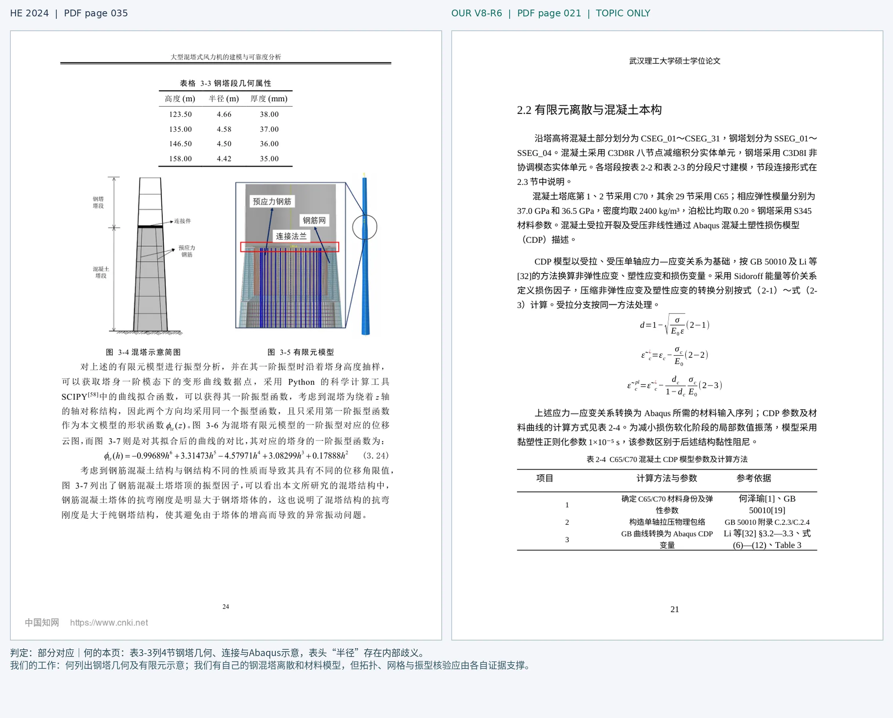
对应小节：2.2 有限元离散与混凝土本构（原PDF第21页起）
差异与验收边界：何列出钢塔几何及有限元示意；我们有自己的钢混塔离散和材料模型，但拓扑、网格与振型核验应由各自证据支撑。
何本页：Abaqus模态图、振型拟合及0.1361Hz参考频率，开始模型验证。
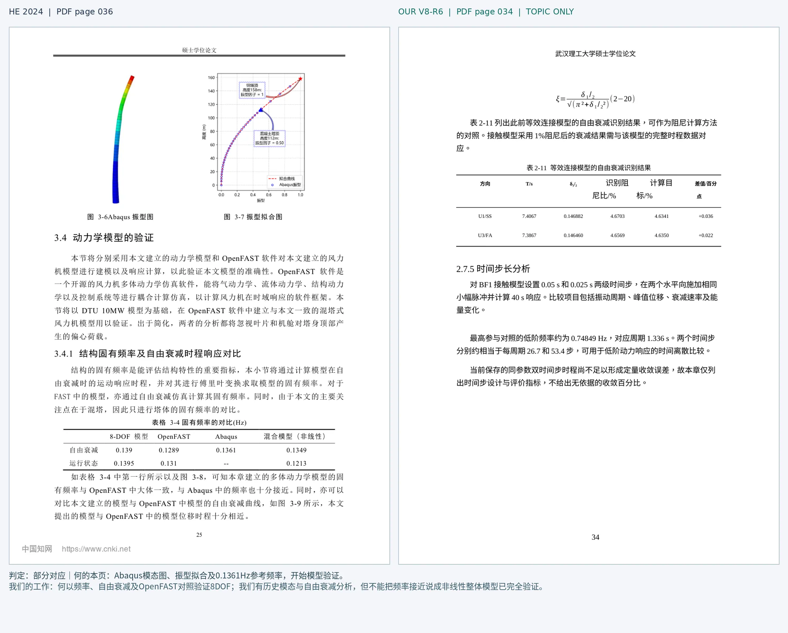
对应小节：2.7.4 小振幅自由衰减分析（原PDF第33页起）
差异与验收边界：何以频率、自由衰减及OpenFAST对照验证8DOF；我们有历史模态与自由衰减分析，但不能把频率接近说成非线性整体模型已完全验证。
何本页：OpenFAST与8DOF模型自由衰减频谱及位移时程比较。
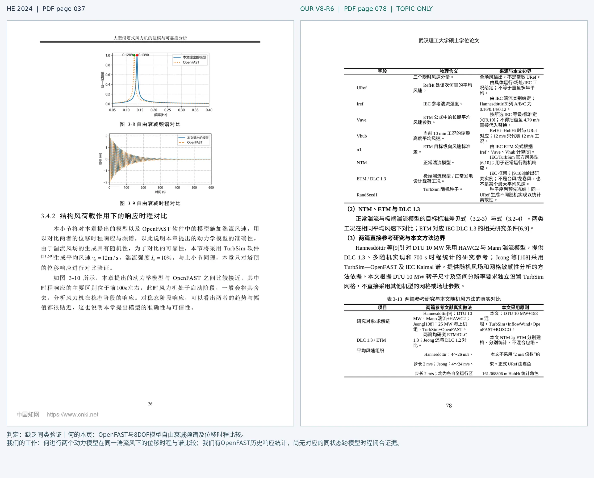
对应小节：3.5.1 随机风场、整机气动弹性计算与控制工况统计（原PDF第77页起）
差异与验收边界：何进行两个动力模型在同一湍流风下的位移时程与谱比较；我们有OpenFAST历史响应统计，尚无对应的同状态跨模型时程闭合证据。
何本页：用湍流风时程、双向位移及频谱对照验证8DOF模型。
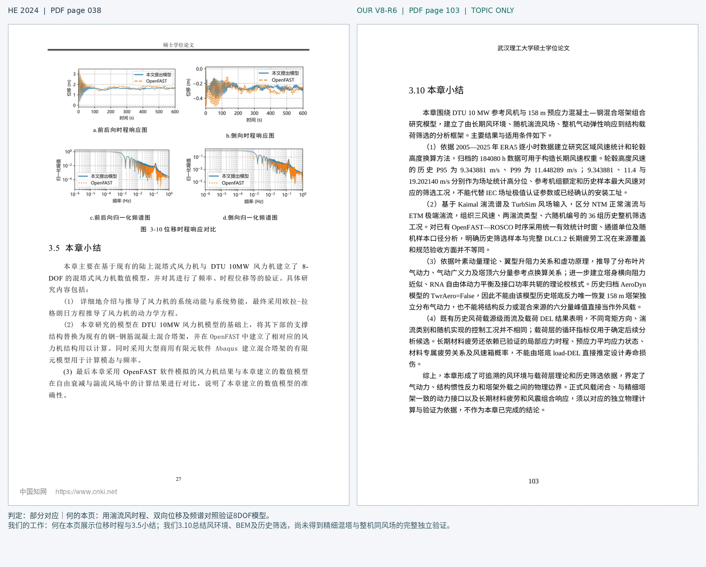
对应小节：3.10 本章小结（原PDF第103页起）
差异与验收边界：何在本页展示位移时程与3.5小结；我们3.10总结风环境、BEM及历史筛选，尚未得到精细混塔与整机同风场的完整独立验证。